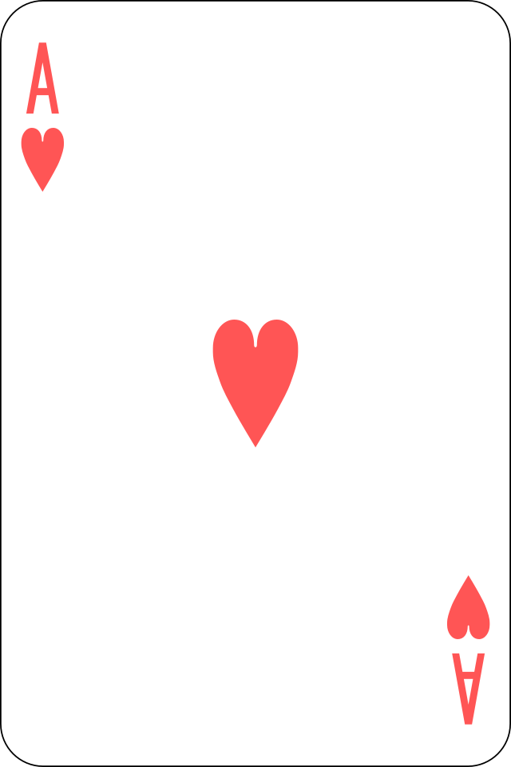
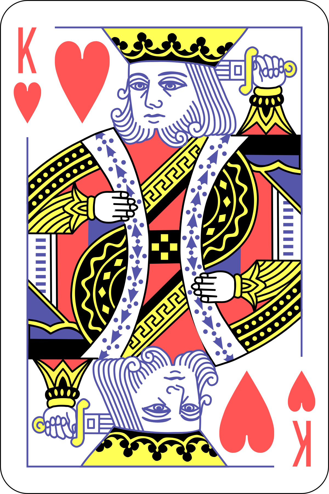
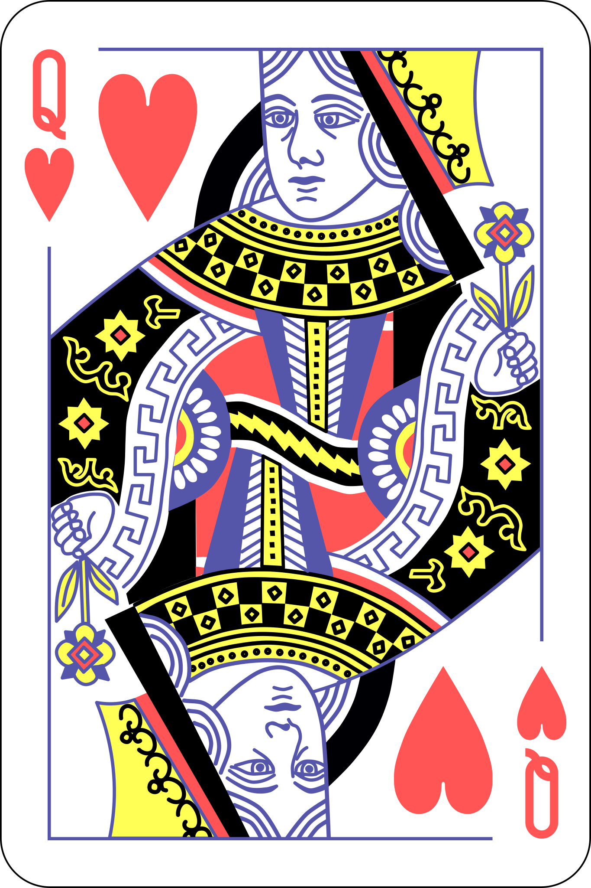
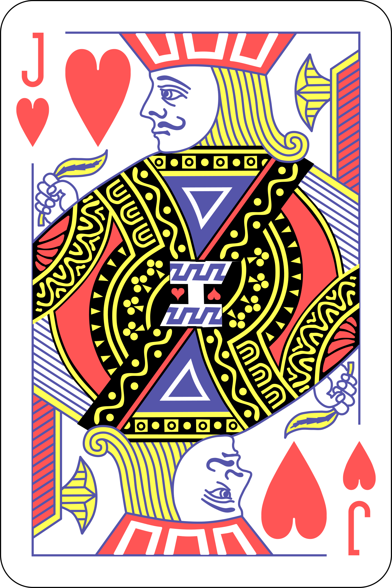

Some random information.

The chances of being dealt pocket aces is approximately 0.45% or 1 in 221 hands.

The probability of being dealt a royal flush is extremely low at approximately 0.000154% or 1 in 649,740 hands.

When holding a pocket pair, the probability of flopping a set is around 11.8% or approximately 1 in 8.5 hands.

If you have four cards to a flush after the flop the likelihood of completing the flush by the river is approximately 34.97% or roughly 1 in 3 hands.